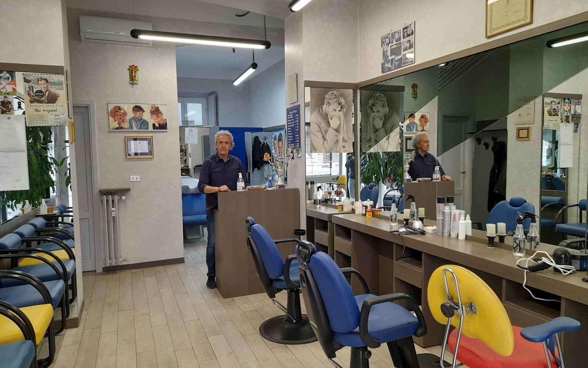
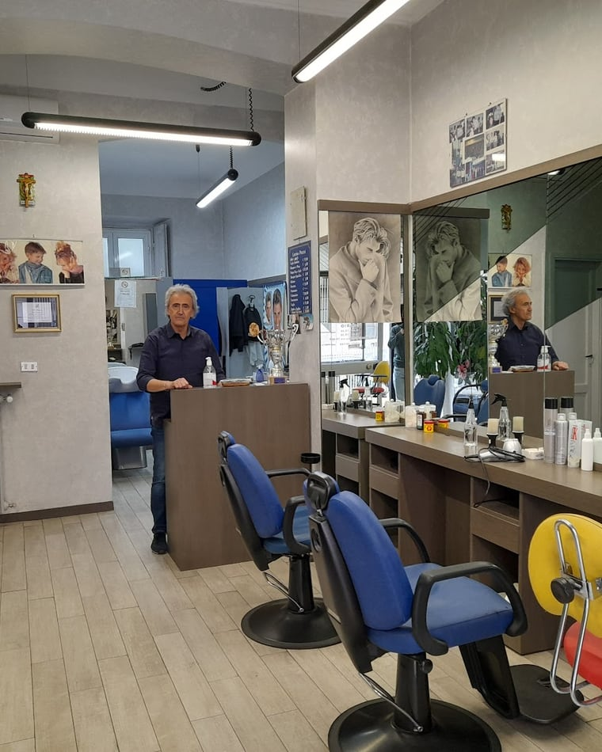
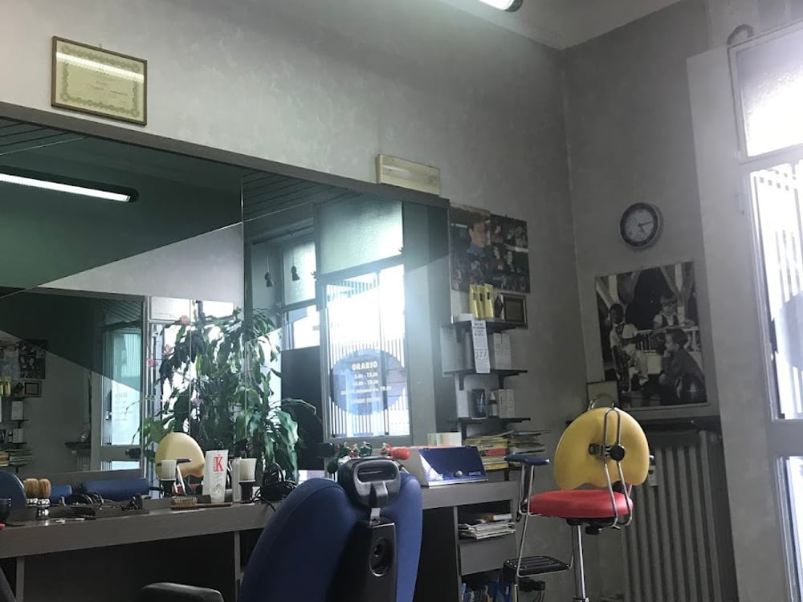
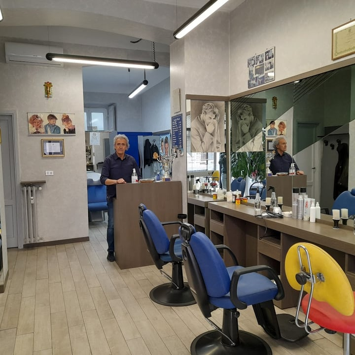
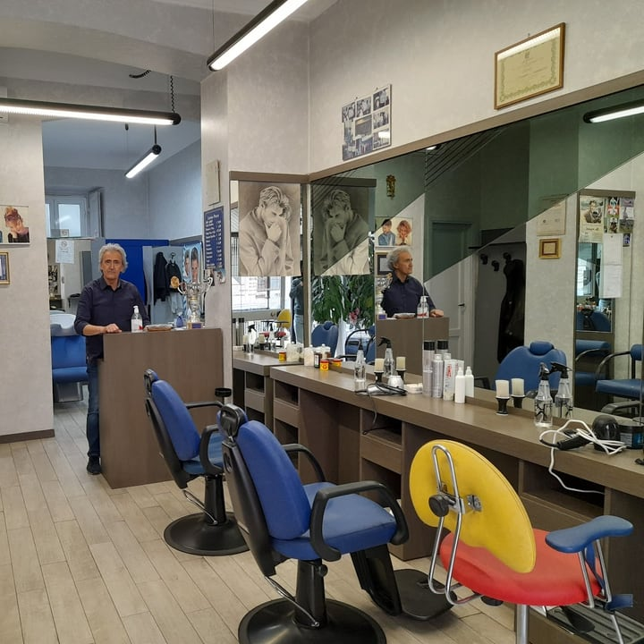
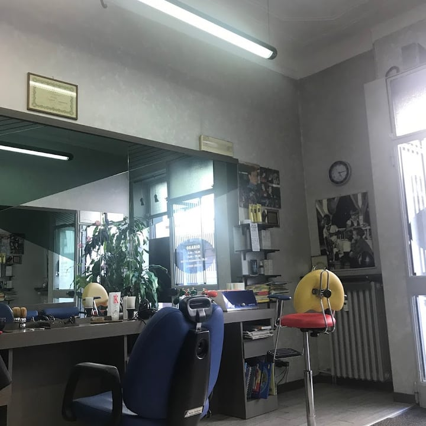
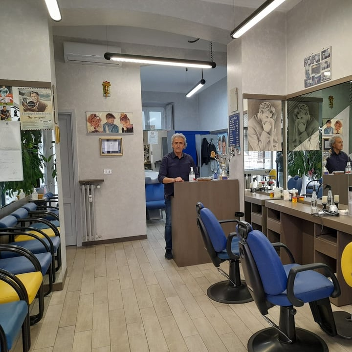

4,7 · 45 recensioni · Google
Il barbiere di Corso Vercelli
Senza appuntamento, da una vita. Ti siedi, non devi dire niente — fa tutto lui. Taglio classico o moderno, come una volta.
Come una volta
Da Mimmo non serve l'agenda: entri, ti siedi, aspetti il tuo turno. E poi non devi nemmeno dire cosa vuoi — lo sa già. È sempre pieno, e c'è un motivo.
«Mi siedo e non devo dire nulla: fa tutto lui, e mi trovo benissimo.»

La fedeltà
«Vado da Mimmo da vent'anni, non ha mai sbagliato un taglio.» C'è chi lo dice da dieci anni, chi da trenta. Un patrimonio della scuola di barbieri italiani.
…che i clienti tornano da Mimmo.
Il servizio
Taglio classico e moderno, la barba, lo shampoo. E i bambini: Mimmo è «un mago con i più piccoli» — c'è pure il seggiolino. Puntuale, pulito, alla mano.
Classico o moderno, fatto su di te senza bisogno di spiegare.
La cura completa, con la mano di chi lo fa da una vita.
Il seggiolino e la pazienza giusta: un mago con i più piccoli.
Shampoo e taglio 20 € — prezzi come una volta

La bottega
Le poltrone in fila, gli specchi grandi, i diplomi alla parete e le foto di sempre. Un barbiere all'angolo di Corso Vercelli che non ha voluto cambiare — perché così va bene, così piace.
La barberia




Dicono di noi
«Vado da Mimmo da vent'anni: non ha mai sbagliato un taglio. Grande simpatia e professionalità, un patrimonio della scuola di barbieri italiani.»
Nicolò G. · Google
«No prenotazione, tagli classici e moderni. Ci vado da dieci anni: mi siedo, non devo dire nulla, fa tutto lui e mi trovo benissimo.»
Claudio S. · Local Guide
«Mimmo è bravo e simpatico. No prenotazione, sempre pieno. Venti euro shampoo e taglio: un ottimo rapporto qualità-prezzo.»
Luciano · Local Guide
«Ottimo parrucchiere come una volta, puntualissimo — e un mago con i bambini. Consigliatissimo!»
Filippo O. · Google
Dove & orari
Via Paolo Giovio 8, 20144 Milano · all'angolo di Corso Vercelli, tra De Angeli e Conciliazione.
—
| Lunedì | Chiuso |
|---|---|
| Martedì | 08:00–12:30 · 14:00–19:30 |
| Mercoledì | 08:00–12:30 · 14:00–19:30 |
| Giovedì | 08:00–12:30 · 14:00–19:30 |
| Venerdì | 08:00–12:30 · 14:00–19:30 |
| Sabato | 08:00–12:30 · 14:00–19:00 |
| Domenica | Chiuso |
Domande frequenti
No: da Mimmo si entra senza prenotare. Ti siedi, aspetti il tuo turno e fa tutto lui. È sempre pieno, ma vale l'attesa.
Taglio classico e moderno, la barba, lo shampoo. E i bambini: Mimmo è un mago con i più piccoli. Tutto come una volta.
Prezzi come una volta: 20 euro shampoo e taglio. Un rapporto qualità-prezzo che i clienti citano da anni.
Da martedì a venerdì 8:00–12:30 e 14:00–19:30; sabato 8:00–12:30 e 14:00–19:00. Domenica e lunedì chiuso.
In Via Paolo Giovio 8, all'angolo di Corso Vercelli a Milano. Telefono 02 469 4668.